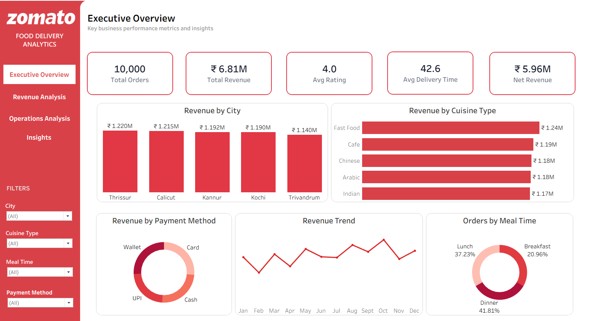
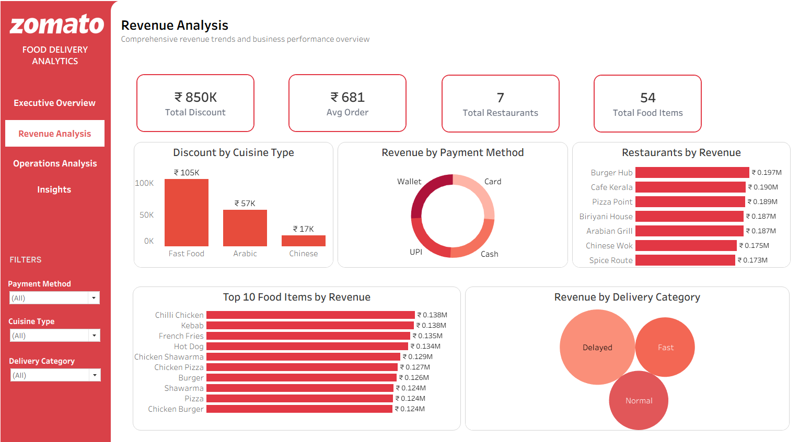
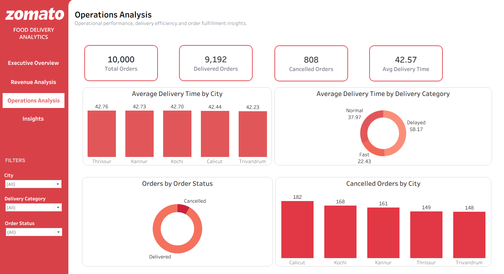
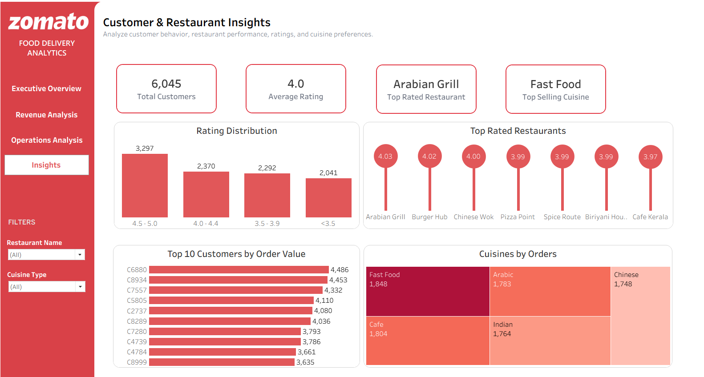

Total Orders
10,000
Orders analyzed
An interactive Tableau Public dashboard analyzing food delivery revenue, restaurant performance, customer behavior, cuisine preferences, and delivery operations to uncover business insights.
What this dashboard analyzes and how it supports decisions.
This project transforms food delivery data into interactive visualizations covering revenue, orders, restaurants, delivery efficiency, and customer behavior. It helps stakeholders evaluate business performance, explore customer preferences, and identify potential operational improvements.
Tools and concepts used in the project:

The Executive Overview summarizes total orders, revenue, net revenue, ratings, and average delivery time. Its visualizations explore revenue by city, cuisine, and payment method, monthly trends, and order distribution by meal time.

The Revenue Analysis page compares restaurant and food item revenue, discounts, payment methods, and delivery categories. It helps identify major revenue contributors and understand how revenue and discounts vary across business segments.

The Operations Analysis page evaluates order fulfillment, delivery time, and cancellations across cities and delivery categories. It helps identify operational patterns and locations where cancellation performance may need attention.

This page explores customer order values, restaurant ratings, cuisine preferences, and rating distribution. It helps identify highly rated restaurants, leading cuisines, and customers with higher order values.
Findings reported from the analysis.
Thrissur generated the highest city-level revenue at approximately ₹1.22M.
Fast Food was the highest-revenue cuisine, generating approximately ₹1.24M.
Dinner accounted for 41.81% of orders, followed by Lunch at 37.23%.
The business generated approximately ₹6.81M in total revenue and ₹5.96M net revenue.
Burger Hub was the highest-revenue restaurant, while Chilli Chicken and Kebab were among the leading food items by revenue.
Of 10,000, 9,192 were delivered and 808 were cancelled.
Calicut recorded the highest number of cancellations, with 182 orders; average delivery time was approximately 42.57.
Arabian Grill was the top-rated restaurant at approximately 4.03, while Fast Food led cuisine order volume with 1,848 orders.
The Zomato Food Delivery Analytics Dashboard provides insights into revenue generation, restaurant performance, customer preferences, and delivery operations. Fast Food emerged as a leading cuisine by revenue and order volume, while Thrissur led city-level revenue. The analysis also highlights order cancellations and delivery performance as areas for operational monitoring. Overall, the project supports data-driven analysis of food delivery business performance.
Archana — Data Analyst | Excel | SQL | Python | Power BI
Passionate about building interactive dashboards and transforming data into actionable insights.